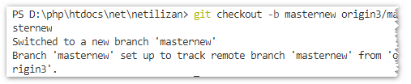
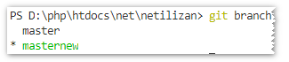
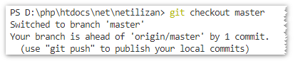
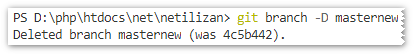
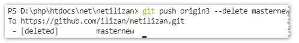

git常用命令
2018-08-23
git克隆(打开对应目录)
git clone https://git.XXXX.git
git提交步骤
把修改后要提交的所有文件提交到本地暂存仓库
git add -A
添加提交日志
git commit -m '日志xx'
拉取仓库最新代码
git pull origin master
提交推送
git push origin master
第一次提交本地没有 .md文件 提交错误解决方法：http://www.jianshu.com/p/835e0a48c825
初始化仓库(打开对应目录)
git init
查看当前目录下git地址
git remote -v
删除当前目录下git
git remote rm origin
添加新的git地址
git remote add originxxx http://git.XXXX.git
查看远程分支：
git branch -a

查看本地分支
git branch

拉取远程某个分支到本地: [本地分支名不能与原有的本地分支名重复]
git checkout -b 本地分支名 origin/远程分支名

查看本地分支
git branch

创建并切换到本地分支
git checkout -b 本地分支名
切换本地分支
git checkout 本地分支名

删除本地分支
git branch -D 本地分支名

删除远程分支
git push origin --delete 远程分支名

合并某分支到当前分支[合并后需要push一下以提交到远程仓库]
git merge 某分支名
github新建远程分支后本地git branch -a不显示新增的分支
本地先运行git pull更新一下即可。
git命令忽略本地修改的文件(不提交某个文件)
git update-index --assume-unchanged xxx.html
如果想恢复该文件，可以用以下代码来恢复跟踪
git update-index --no-assume-unchanged xxx.html
把readme.txt文件在工作区做的修改全部撤销[-- 很重要，如果没有--的话，那么命令变成创建分支了。]
git checkout -- readme.txt